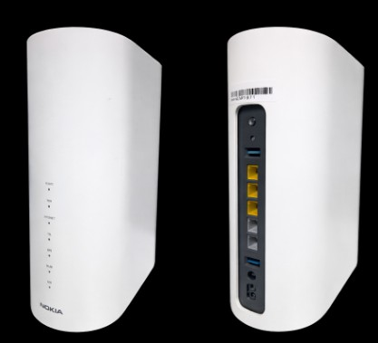
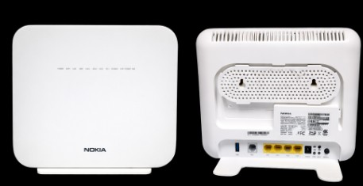
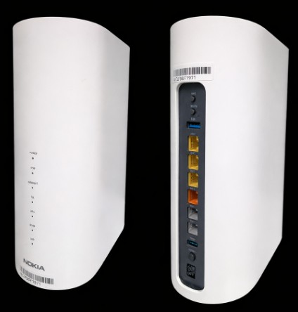

| Modelo ONT | Pico TCP DL | MCS máx. | Canal (5m) | Estabilidad | Sens. Distancia | Ret. MCS | TCP DL @ 30m | TCP DL @ 60m |
|---|---|---|---|---|---|---|---|---|
| XS-2426X-A | ~2.6 Gbps | MCS11 | 160 MHz | Alta ★★★ | Media | Alta ★★★ | ~1.500 Mbps | ~338 Mbps |
| XS-2426G-A | ~1.7 Gbps | MCS9 | 160 MHz | Media ★★ | Alta ⚠️ | Baja ★ | ~385 Mbps | ~48 Mbps |
| XS-2426G-B | ~1.9 Gbps | MCS10 | 160 MHz | Alta ★★★ | Media | Alta ★★★ | ~820 Mbps | ~158 Mbps |